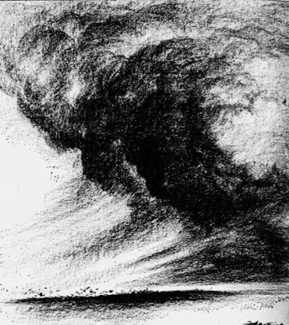
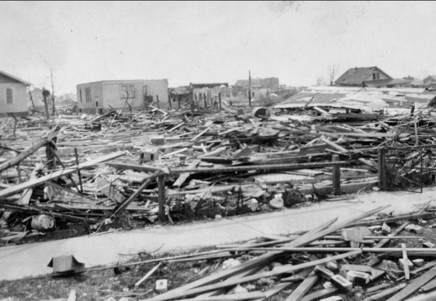
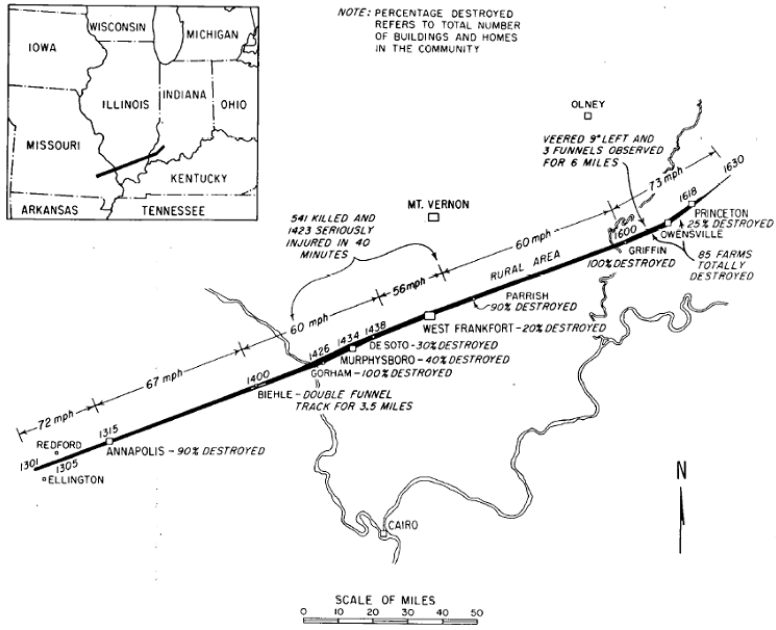

The Tri-State Tornado
The Tri-State Tornado was formed in Missourion March 18th, 1925 at 12:45 p.m. and ended its terror in Indiana at 4:30 p.m., having a duration of 3 hours and 45 minutes. This was the deadliest tornado in the history of the United States and also holds many other records. While this tornado was not rated most tornado experts agree and believe that this was an F5 tornado on the original Fujita scale.
Till today, there is still debate on whether this was single or a series of tornadoes that caused the damage. Even an extensive research project in 2013 couldn't find a definitive answer to this debate.

The tornado claimed 695 lives and injured over 2.000 people, with Illinois suffering the largest loss of life at 613 deaths. The tornado also destroyed 2 schools during school hours. Overall the property damage was counted to be approximately $16.5 - $17 millions in 1925 dollars, which is now roughly equivalent to $1.4 billion today. Entire towns were leveled, and thousands were left homeless, with recovery taking months due to the immense scale of destruction the tornado caused.

The Tri-State Tornado took an interessting but especially long path of 219 miles (352 km), destroying everything in its way. It adopts the name "Tri-State", because it went through 3 States (Missouri, Illinois and Indiana).

This map shows the tornado's approximate path, indicating the percentage of destruction in affected cities. The timestamps along the line indicate when the tornado reached specific locations, while arrows illustrate the tornado's travel speed.
Overall the Tri-State was a very dangerous tornado event, leading to much destruction, death, injuries and homelessness. Even though facts and maps always and always will vary from each other, the Tri-State shows us how dangerous tornadoes really can be and why we need to take special caution against tornadoes.
{kind=link}
{kind=link}